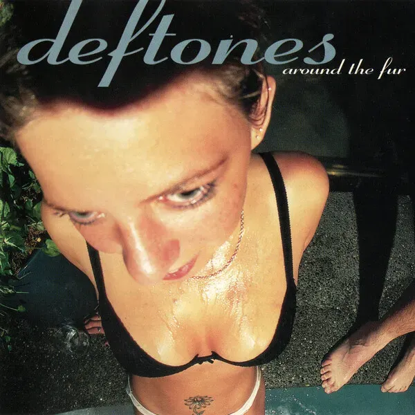

Around the Fur - Deftones (1997)

Segundo álbum de estúdio do Deftones, lançado em 1997. É considerado um dos pilares fundamentais do movimento nu metal, combinando peso agressivo com atmosferas melódicas e experimentais.
Toxicity - System of a Down (2001)
.jpg)
Lançado em setembro de 2001, este álbum catapultou o System of a Down ao estrelato mundial. Misturando metal alternativo, nu metal e influências folclóricas armênias, traz letras políticas e sociais marcantes.
Fallen - Evanescence (2003)
.jpg)
O álbum de estreia do Evanescence definiu a estética do rock gótico e alternativo dos anos 2000. Impulsionado por sucessos globais como "Bring Me to Life", vendeu mais de 17 milhões de cópias.
Hypnotize - System of a Down (2005)
.jpg)
Segunda parte do projeto duplo lançado pela banda em 2005 (junto com *Mezmerize*). Mantém a assinatura caótica, técnica e enérgica do grupo, consolidando-os como lendas do rock alternativo.
The Open Door - Evanescence (2006)
.jpg)
Segundo álbum de estúdio do Evanescence, marcado por arranjos ainda mais grandiosos de coral e piano, liderados pela voz marcante de Amy Lee. Mostrou a maturidade musical da banda após a saída de membros fundadores.
Diamond Eyes - Deftones (2010)
.jpg)
Um marco emocionante na carreira do Deftones, lançado após o trágico acidente de Chi Cheng. O álbum trouxe uma sonoridade pesada, luminosa e etérea, sendo aclamado como um dos melhores trabalhos da banda.
Selfish Machines - Pierce the Veil (2010)
.jpg)
Segundo álbum do Pierce the Veil, obra-prima do post-hardcore e emo moderno. O disco explora temas de imperfeição humana e conexões intensas com vocais dramáticos e guitarras complexas.
Evanescence - Evanescence (2011)
.jpg)
Terceiro álbum autointitulado da banda. Focou em uma sonoridade mais crua de banda de rock, misturando elementos eletrônicos sutis com o peso tradicional das guitarras e orquestrações.
Collide With The Sky - Pierce the Veil (2012)
.jpg)
Um dos álbuns mais icônicos da era de ouro do emo/post-hardcore dos anos 2010. Contém o mega hit "King for a Day" em parceria com Kellin Quinn, definindo o som enérgico e emotivo da banda.
Misadventures - Pierce the Veil (2016)
.jpg)
Quarto álbum de estúdio do grupo, aclamado por sua produção impecável e instrumentação técnica refinada. Mantém a intensidade emocional característica do Pierce the Veil com refrões extremamente cativantes.